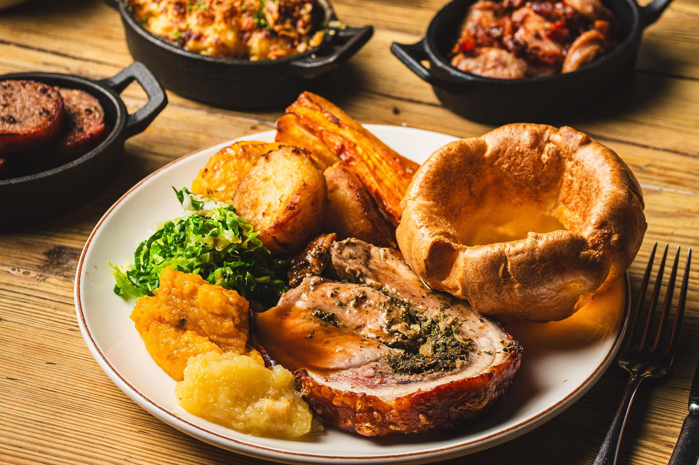

Home
Classic Sunday Roast recipe

Description
A Sunday roast is a traditional British meal that is typically served on Sunday, consisting of roasted meat, roast potatoes and accompaniments such as Yorkshire pudding, stuffing, gravy, and condiments such as apple sauce, mint sauce, or redcurrant jelly.
Ingredients
For the Yorkshire puddings
- 350g/12oz plain flour
- 4 large or 5 medium free-range eggs
- 800ml/1 pint 7fl oz milk (you may not need all of it)
- vegetable oil, for cooking
- salt
For the beef
- 2.5kg/5½lb oven-ready rib of beef on the bone
- 1 tbsp English mustard powder
- a drizzle of vegetable oil or 2 tsp duck fat
- freshly ground black pepper
For the roast potatoes
- 16 medium-sized Maris Piper or King Edward potatoes (each about 175g/6oz), peeled, cut into equal-sized pieces
- 8 garlic cloves
- 5 tbsp duck fat
- 8 sprigs thyme
- sea salt, to taste
For the gravy
- pan-roasting juices
- 350ml/12fl oz red wine
- 4 tsp plain flour
Steps
- First make the Yorkshire pudding batter. Sift the flour and a pinch of salt into a bowl, add the eggs and gradually whisk in enough milk to make a smooth batter thick enough to coat the back of the spoon. Cover and leave to rest for six hours or overnight.
- Preheat the oven to 190C/375F/Gas 5. Take the beef out of the fridge and allow it to come back to room temperature.
- Mix the mustard powder with a few teaspoons of water to make a paste. Rub the beef all over with the mustard paste and season well with salt and pepper.
- Heat the oil or duck fat in a large frying pan. When hot, add the beef and sear on all sides, until it is nicely brown all over.
- Place the beef in a roasting tin and roast in the oven for one hour (11 minutes per 450g/1lb - this will give you rare meat). Cook for a further 15 minutes for medium-rare (14 minutes per 450g/1lb) or a further 30 minutes for well-done (16 minutes per 450g/1lb).
- While the beef is cooking, prepare the roast potatoes. Peel the potatoes and parboil them in salted water for about seven minutes until almost cooked (they will still feel firm when pierced with a knife). Drain thoroughly and then shake them around a little in the colander until the outsides are fluffy.
- Remove the beef from the oven, transfer it to a carving board and cover with foil. Allow it to rest in a warm place for 30 minutes. Turn up the oven to 220C/425F/Gas 7.
- Put the duck fat for the roast potatoes into a small roasting tin and heat in the oven for five minutes. Add the potatoes to the tin with the garlic cloves, thyme and some sea salt and toss them around until well coated in the fat. Return the tin to the oven and roast for 30-35 minutes or so until golden and crunchy.
- Next make the Yorkshire puddings. Pour 5mm/½inch of vegetable oil into the well of each Yorkshire pudding tin - eight individual ones or two four-hole trays. Place the tins in the oven to heat for a few minutes.
- When the oil is hot, remove from the oven. Give the Yorkshire batter a stir and carefully pour it into the tins. Take care, as the oil may splatter. Fill each well up to about halfway.
- Place the tins back in the oven and cook for about 25-30 minutes alongside the roast potatoes, until they are well risen and golden.
- While the potatoes and Yorkshire puddings are in the oven, make the gravy. Place the tin with its roasting juices on the hob over a medium heat. Stir in the flour and the red wine. Scrape well to get all the bits from the bottom of the tin into the gravy. Leave to simmer for ten minutes, then season.
- To serve, carve the beef into thick slices and pile on plates with the Yorkshire puddings and roast potatoes. Pour lashings of gravy over the top.